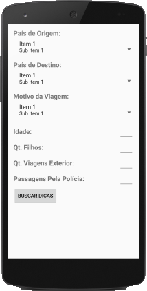
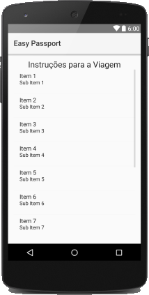
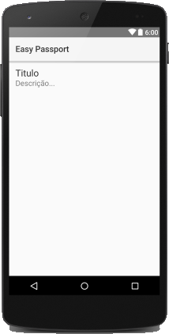

O Aplicativo.
O aplicativo tem como objetivo simplificar a lista de documentos requeridos no processo de aquisição de passaportes e vistos por meio de um aplicativo mobile que consulta os documentos baseados no perfil de usuário.
Benefícios
- Evita a leitura e o entendimento dos editais enormes providos pelas instituições responsáveis como Polícia Federal de Embaixadas.
- Simplifica o processo, deixando-o menos burocrático.
- Permite o usuário se concentrar na aquisição dos documentos sem se preocupar com detalhes que possam passar durante a leitura dos editais.
Design
O aplicativo conta com uma interface simples para a busca das recomendações de viagem e a opção para a visualização dos detalhes de cada recomendação.



Autor
Daniel Elídio (@danielelidio) é estudante de Ciência da Computação na Universidade Federal de Alfenas (UNIFAL-MG) desde 2013.
Suporte & Contato
Se você tiver algum problema ou sugestão, por favor, envie uma questão em aberto para nosso Bug Tracker